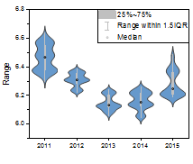

| |
|
|
|
|  |
|
| |
| |
|
|
|
|
|
このグラフを作成するには、バイオリン分割を除いて、1つ以上のワークシート列が必要です。
バイオリン分割プロットでは、少なくとも2つの列が必要です。さらに、最後の列は2つカテゴリを持っていなければなりません。
バイオリンプロット
ボックス付きバイオリン
点列付きバイオリン
四分位付きバイオリン
棒付きバイオリン
バイオリン分割
半バイオリン
Violin Plot: Violin.otpu
Violin with Box: ViolinBox.otpu
Violin with Point: ViolinData.otpu
Violin with Quartile: ViolinQuartile.otpu
Violin with Stick: ViolinStick.otpu
Split Violin: ViolinSplit.otpu
Half Violin: HalfViolin.otpu